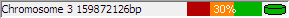

The status bar is a notification area which usually shows relevant information for whatever object your mouse is over at the time.
Near the right hand end of the status bar is a small graph showing SeqMonk's current memory usage. It is worth keeping an eye on your memory usage since running out of memory will cause SeqMonk to run very slowly, and eventually to stop altogether.
The memory usage graph is in three parts:
To get an accurate view of the current memory usage you can double click on this graph which will cause SeqMonk to pause and clean up all of its memory. What you then see will be the actual amount of memory which is being consumed by the program. At other times the usage will include inactive memory which SeqMonk hasn't got round to cleaning up.
The percentage value shown is the percentage of total available memory (green) which is currently being used (red). When this percentage reaches 90% you will get a warning since you are coming close to running out of available memory. In this case you should look at the memory settings and preferences documentation to see how you can enable more memory or reduce the amount of memory SeqMonk requires.
At the right hand end of the bar is a small icon which shows the current status of your disk cache. If this icon is red then caching is not being used. If it is green then caching is enabled but inactive. If it is orange then caching is enabled and data is currently being read from the cache. You can double click on this icon to turn disk caching on/off, but the change will not take effect until SeqMonk is restarted.